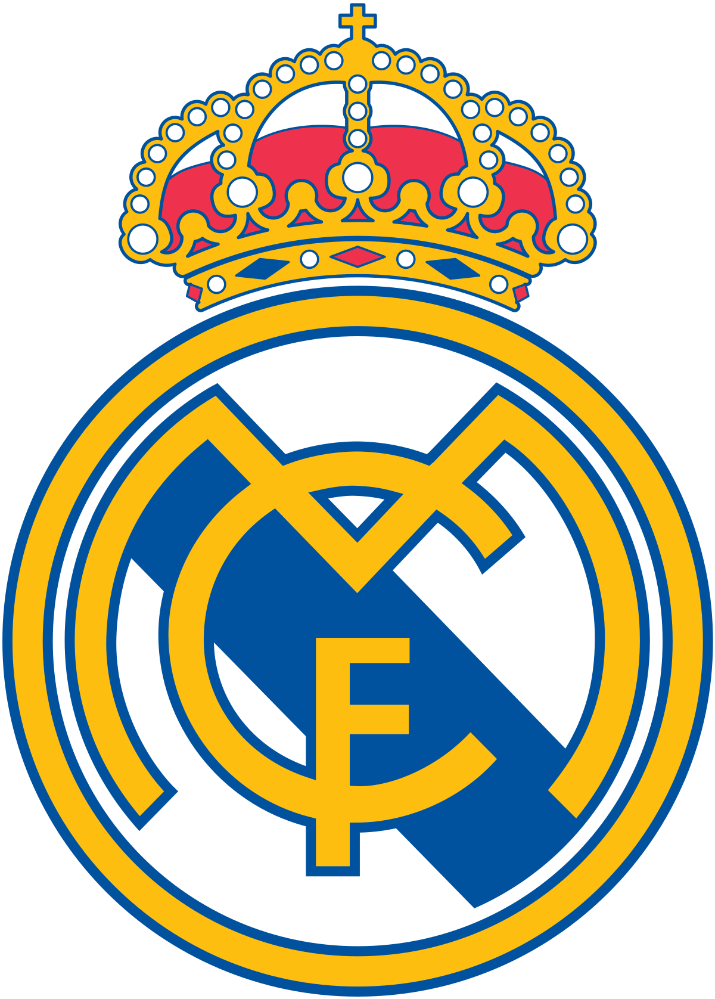
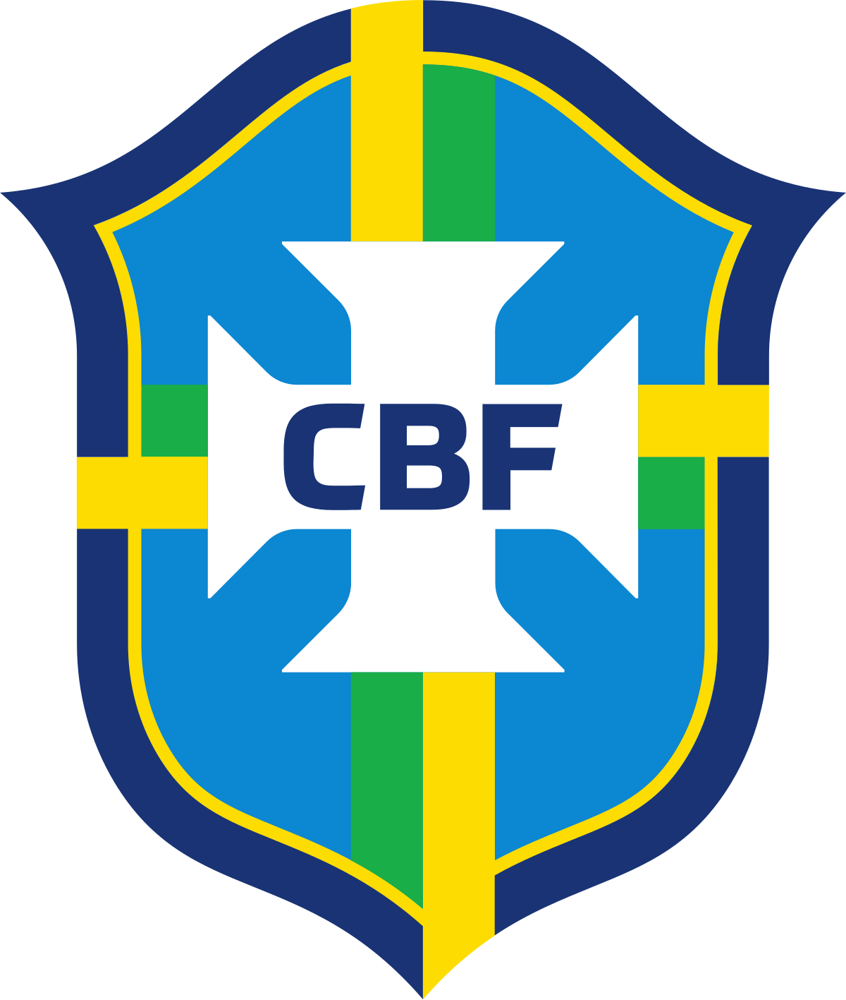
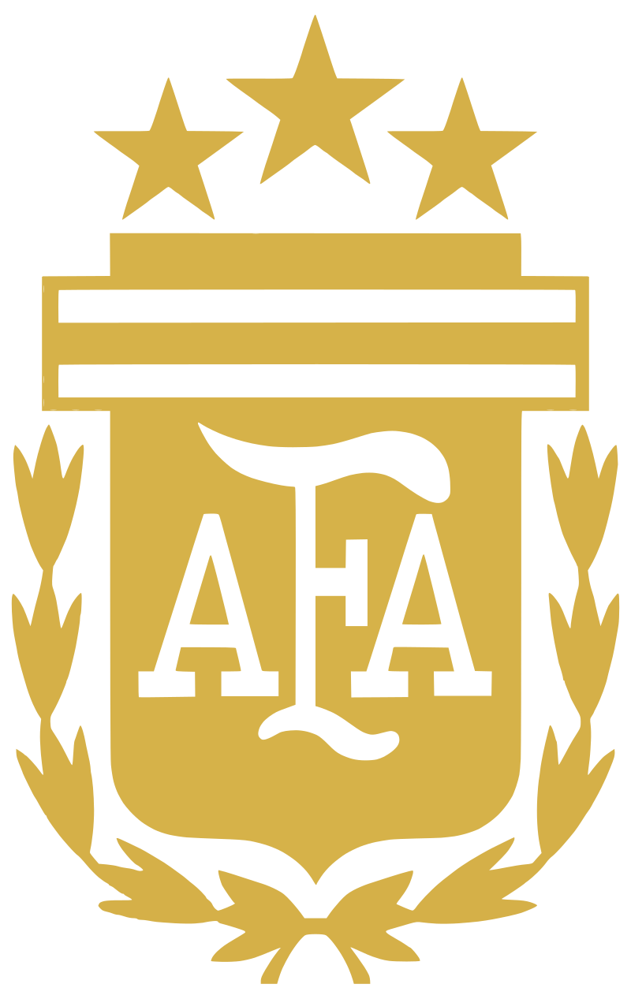
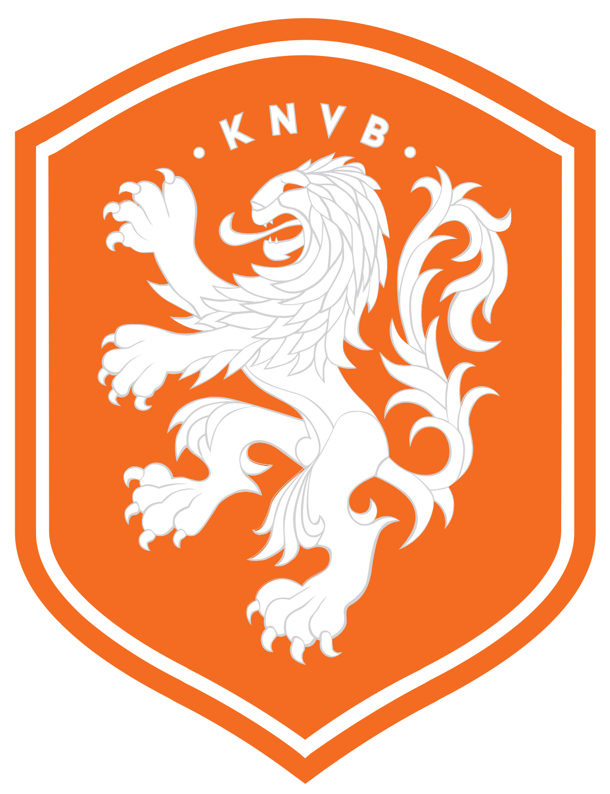
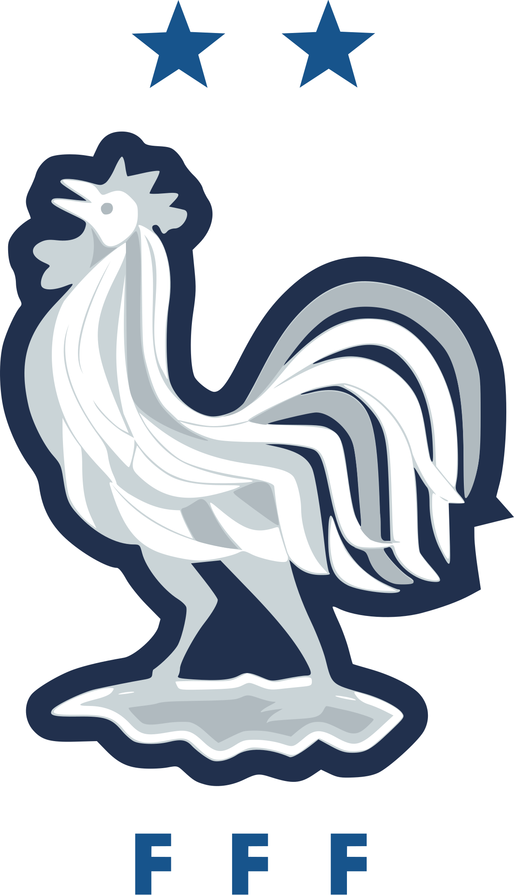
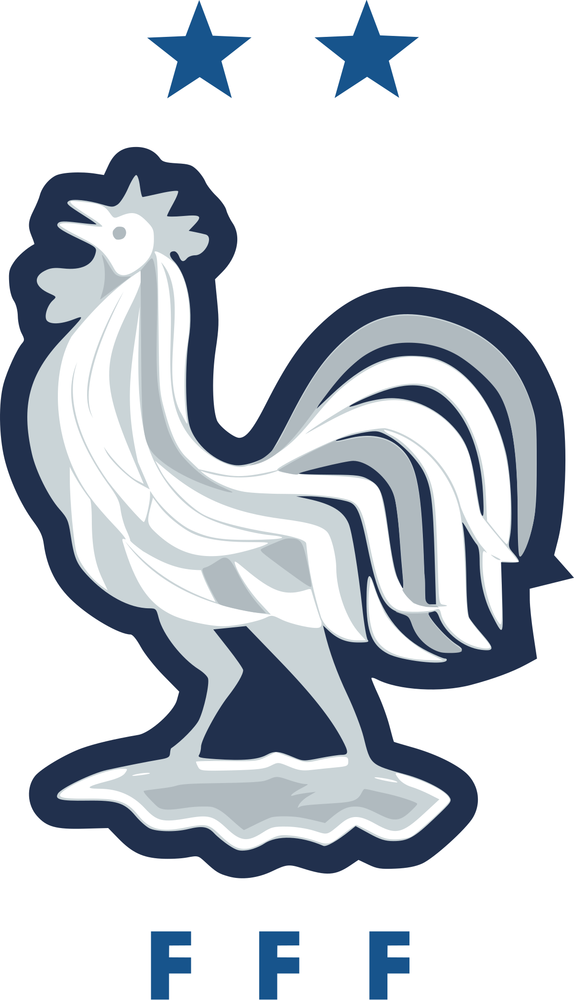
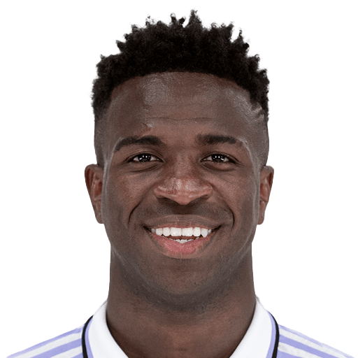
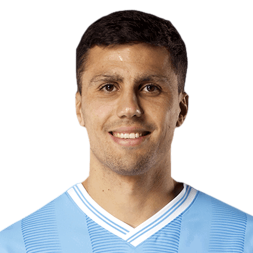

by Stuart Kovacs

Mohammed Salah
Liverpool and Egypt

Vinicius Junior  
Real Madrid and Brazil

Lionel Messi 
Inter Miami and Argentina

Jude Bellingham 
Real Madrid and England

Rodri 

Manchester City and Spain

Virgil Van Djik 
Liverpool and Netherlands

William Saliba 

Arsenal and France

Last season's results
When Rodri topped Vinicius Junior to win the Ballon d'Or last season, many around the football world were split on the decision. What was valued more? Rodri's prowess in the midfield of Manchester City as they won the Premier League once again? Or was it Vinicius' goal scoring ability for Real Madrid as they won both La Liga and Champions league?
This season, Rodri picked up an early ACL injury, ending his season opeing the door open for next year's award. Will Vinicius Junior get his revenge and win it? Could Mo Salah lead Liverpool to the Premier League title and win the coveted award? Could Lionel Messi win his record 9th award? Or will it be somebody else?

The Ballon d'Or Trophy
2024-25 Statistics |
|||
|---|---|---|---|
| Player | Goals | Assists | Tackles |
|
Mohammed Salah |
21 |
17 |
n/a |
|
Vinicius Junior |
13 |
6 |
n/a |
|
Lionel Messi |
20 |
11 |
n/a |
|
Jude Bellingham |
8 |
6 |
n/a |
|
Rodri |
0 |
0 |
n/a |
|
Virgil Van Djik |
2 |
1 |
22 |
|
William Saliba |
2 |
0 |
40 |

| Liverpool |
|||||
|---|---|---|---|---|---|
| Player Name | Goals | Assists | Goals and Assists | Progressive Passes | Shots on Target |
| Mo Salah | 18 | 13 | 31 | 71 | 28 |
| Luis Diaz | 6 | 4 | 10 | 14 | 17 |
| Cody Gakpo | 8 | 3 | 11 | 15 | 15 |
| Arsenal |
|||||
|---|---|---|---|---|---|
| Player Name | Goals | Assists | Goals and Assists | Progressive Passes | Shots on Target |
| Bukayo Saka | 7 | 9 | 16 | 85 | 26 |
| Martin Odegaard | 5 | 6 | 11 | 66 | 12 |
| Kai Havertz | 10 | 4 | 14 | 13 | 18 |
| Manchester City |
|||||
|---|---|---|---|---|---|
| Player Name | Goals | Assists | Goals and Assists | Progressive Passes | Shots on Target |
| Erling Haaland | 19 | 5 | 24 | 22 | 45 |
| Kevin de Bruyne | 3 | 10 | 13 | 101 | 12 |
| Phil Foden | 3 | 4 | 7 | 31 | 14 |